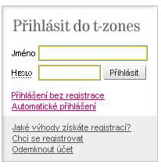
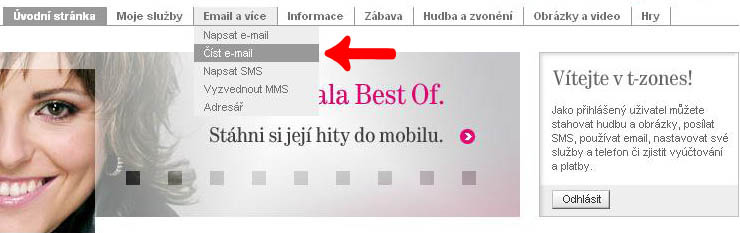
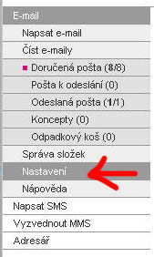
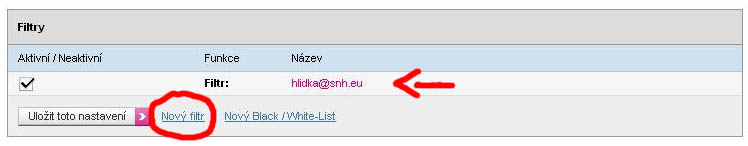
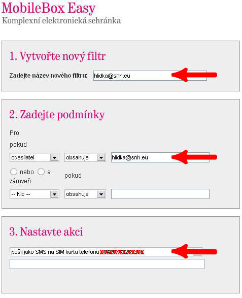
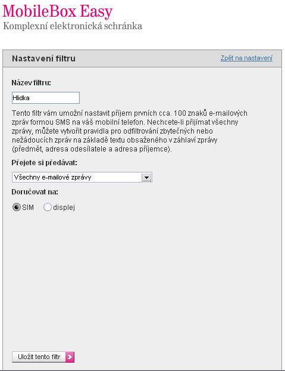

Návod na hlídku MA pro telefony T-Debile
1.) zaregistrujete si na adrese T-zones.cz svoje telefonní èíslo.

takto vypadá to místo kde je potøebné zadat login a heslo
2.) Po zalogování si založíte e-mail (buï to bude nìkde mezi "moje služby" nebo jak je uvedeno na dalším screenu)

Email založíte jednoduše i s pomocí vnitøní napovìdy t-zones
3.) Až budete mít založený mail, kliknete na nastavení.

4.) V nastavení je vlastnì jedinná vìc - filtry.

zde kliknete na vytvoøit nový, neob pøípadnì upravíte stávající filtr.
5.) Nastavíte filtr pøesnì jak je uvedeno na dalším screenu

5a.) V pøípadì, že vám tento filtr nepùjde uložit (díky tomu že nemáte MobileBox Easy), øeší se pøeposílání pøes Nový Black/White list
